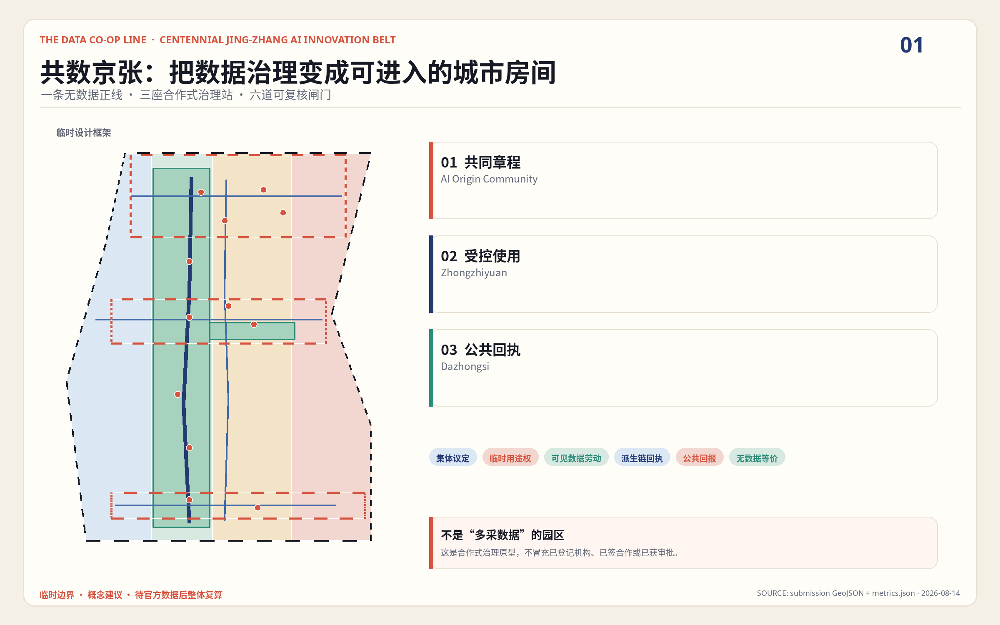
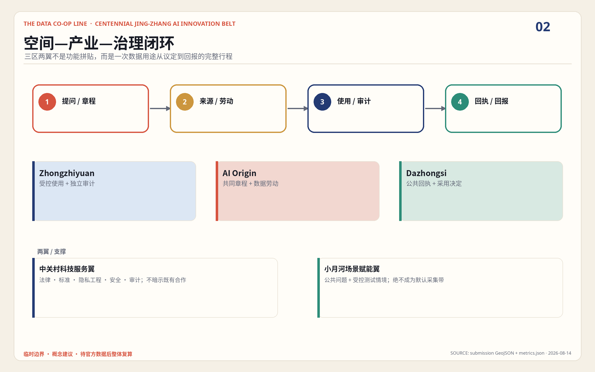
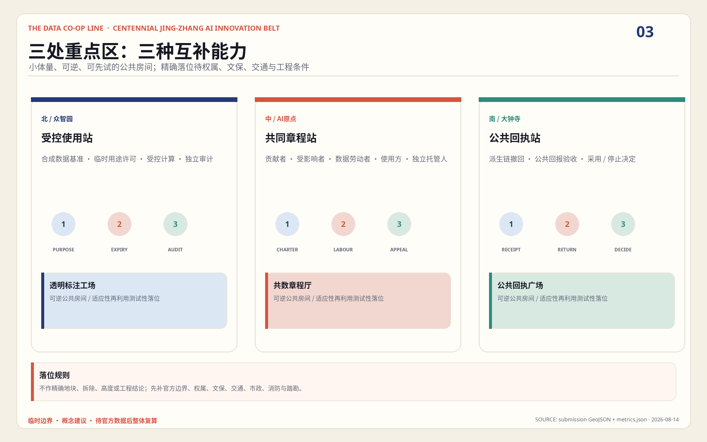
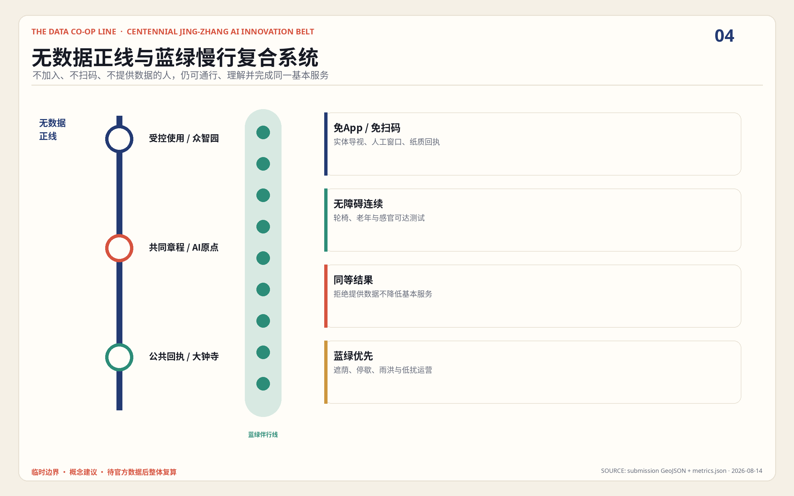
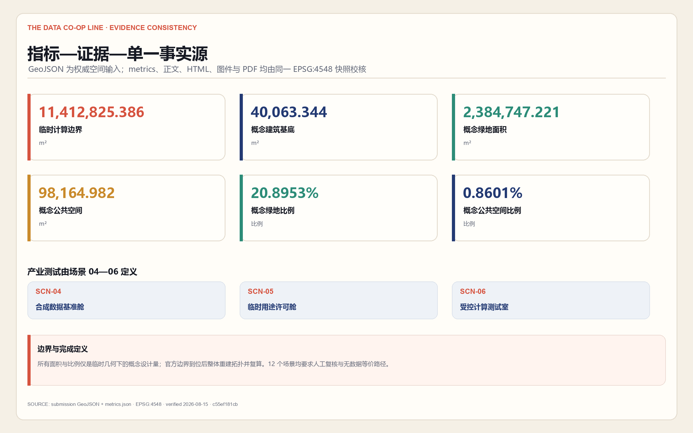

众智园
合成基准、临时用途许可、受控计算、到期与独立审计。
看得见的数据劳动 · 可撤回的训练公地 · 回到社区的公共价值
本页是离线解释层；权威机器数据仍以 GeoJSON、metrics 与矩阵为准。所有空间落点基于临时约束，不是官方红线或审批结论。
不是开放更多数据，而是共同决定谁可以为何种目的、在多长时间内使用，并让劳动、残余影响与公共回报可核验。

统筹研究范围组织创新生态；总体设计范围组织无数据正线与城市更新；重点区域测试三个合作式治理房间。

三区承担议定、使用、回执三种互补能力；两翼提供专业支持和受控场景，不作为默认采集通道。

合成基准、临时用途许可、受控计算、到期与独立审计。
贡献者、受影响者、数据劳动者、使用方与托管人共同写章程。
公众验收、派生链撤回、公共回报与采用或停止决定。
四类概念分区完整覆盖临时总体范围，但不等于地块、权属或法定用地边界。
| ID | 概念功能 | 合作式角色 |
|---|---|---|
| LU-001 | AI研发与受控计算 | 临时用途权 |
| LU-002 | 公园绿地与无数据正线 | 同等城市权利 |
| LU-003 | 产业服务与公共回执 | 审计与公共回报 |
| LU-004 | 社区服务与共同章程 | 议事与数据劳动 |
南北贯通的免App、免扫码、无障碍步行正线，叠加三条东西公共缝合线；精确断点与工程方案待正式交通资料。

把遮荫、停歇、雨洪与低扰运营作为无数据服务的空间底盘；不以传感器密度代替公共空间质量。
六个小体量公共房间是适应性再利用或可逆搭建的测试性落位；现状建筑、拆改留、高度、容积率与消防均为未知。
近期先做章程、合成数据与纸质回执；中期联调受控计算与无数据正线；长期仅在公开评估后扩展派生链和公共回报。
十二张场景卡全部要求人工复核和无数据等价路径；三项产业测试只用合成、公开或明确清权数据。
下列值由 GeoJSON 投影至 EPSG:4548 联合复算；均是临时几何下的概念设计量，不是审定指标。

agent.1—agent.6 均由正文、结构化图层、指标、图件、双语PDF与离线页共同响应；矩阵保存逐项证据。
最终状态以 finalize 后持久化的四门自检为准；组织方缺少官方几何不阻断内容评分，但始终保留复算警示。
空间事实以投稿 GeoJSON 为单一入口，metrics.json 与 visual/assets/evidence-snapshot.json 保存复算结果；公告、任务书、来源登记与一手案例网页在 sources.json 和 assets/media/source-notes.md 追溯。
官方边界、控规、权属、建筑、市政、文保与法律角色均待补；合作社是治理原型，不是已登记法人。撤回回执披露残余影响，不承诺完美抹除。